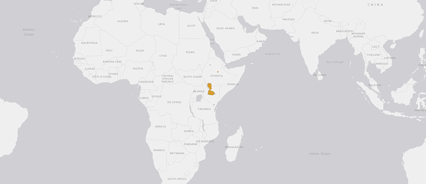
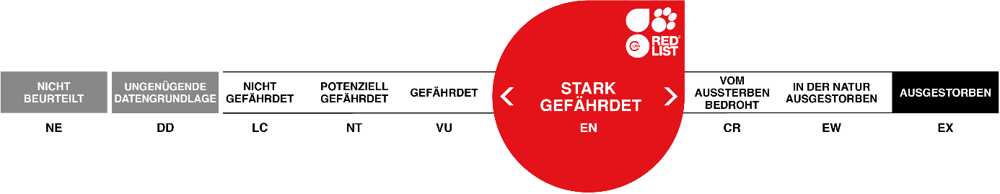
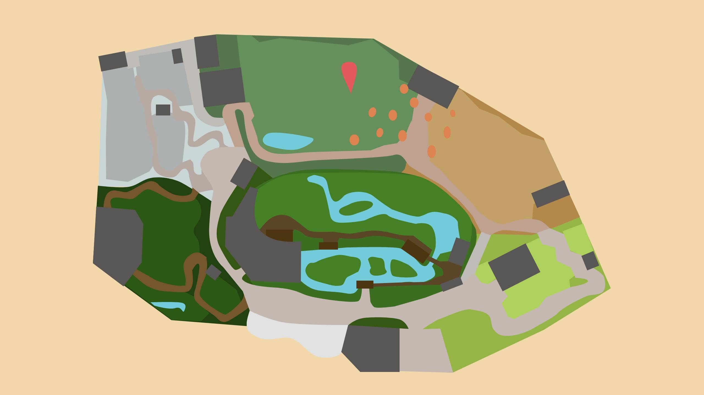

GREVYZEBRA
EQUUS GREVYI
Das Grevyzebra, benannt nach dem ehemaligen französischen Präsidenten Jules Grévy, ist das grösste heute noch lebende Wildpferd. Das natürliche Verbreitungsgebiet grenzt an dasjenige der Wildesel und manchmal überschneiden sich die Territorien der beiden Arten auch. Aus diesem Zusammentreffen kann Nachwuchs entstehen, welcher dann Zonkey (Zebra und Donkey) oder zu Deutsch Zebresel genannt wird.
Steckbrief
| Verwandtschaft | Unpaarhufer, Pferde, Zebras |
|---|---|
| Lebensraum | Grasland, Trockensavannen |
| Lebenserwartung | 30 Jahre |
| Futter | Gräser |
| Lebensweise | Tagaktiv |
Verbreitung
Bedrohunsstatus
Karte
